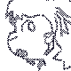

dramatis personae ^
jay
the messenger; the alley cat
all walking i do is jaywalking
muffled behind mirror glass
sopping wet animal
collar of frayed threads
c.c.
the aspirant; the magician
dogs chasing tails on flipping coins
peak transgenderism
stagelight sun glare
smoke eats like a cancer
other cast members without pages
wright

kite
telecom operator
lark
...more?
 jay
jay
 c.c.
c.c.
 wright
wright telecom operator
telecom operator